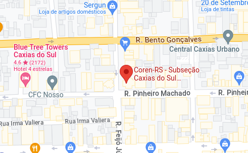
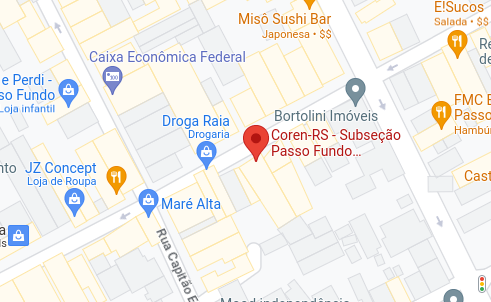
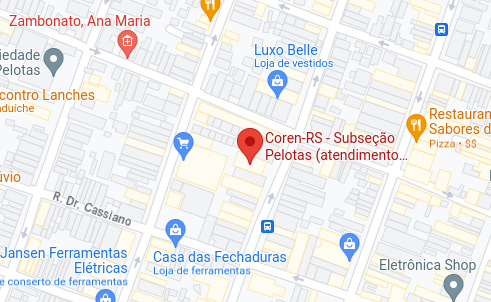
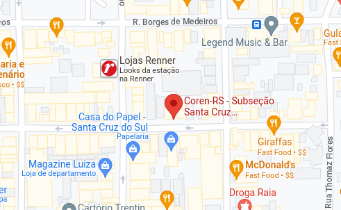
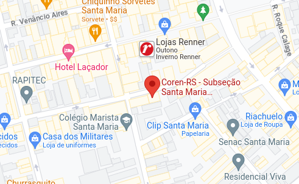
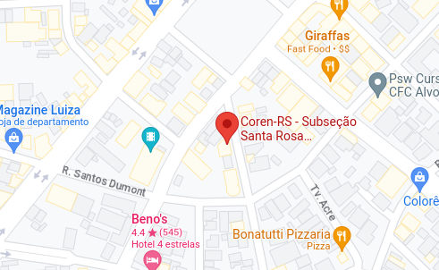
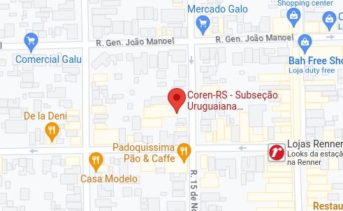

Institucional
A Enfermagem
Categorias profissionais
Entidades da Enfermagem
Perfil da Enfermagem
Símbolo e juramento
Links úteis
Coronavírus
O Coren-RS
O que faz o Coren-RS
Sede e subseções
Diretoria e plenário
Departamentos
Licitações e contratos
Concurso do Coren-RS
Eleições Coren-RS
Apoio Institucional
Concursos científicos
Consulta Eleições Pleito 2020
Coren-RS na área
Eventos
Serviços
Acesso online
Entrar
Cadastre-se
Lembrar senha
Saiba como acessar os serviços
Registro e cadastro
Já sou inscrito
Quero me inscrever
Registro de empresa
Requerimento On-line
Anuidades e acordos
Anuidade 2023
2ª via de boleto
Parcelamento de Débitos
Pedido de revisão de débitos
Dúvidas frequentes
Fiscalização
Orientações
Responsabilidade Técnica
Regimentos
Dimensionamento
Dúvidas frequentes
Comissão de Ética
Certidões
Emitir certidão
Verificar autenticidade
Oportunidades de emprego
Divulgar vaga (para empresas)
Procurar vaga (para profissional)
Consulta
Profissional
Edital inscrição em dívida ativa
Edital de Citação / Intimação
Estatísticas
Agendamento
Agendar atendimento
Consultar / Cancelar
Legislação
Leis
Decretos
Resoluções
Decisões
Pareceres
Portarias
Código de ética
Publicações
Notícias
Vídeos
Receba novidades
Protocolos de Enfermagem APS
Revistas
Podcast: Cafezinho com a Enfermagem
Divulgação de Trabalhos Científicos
Divulgação de Livros
Divulgação de Pesquisas
Aviso de sessão pública
Contato
Fale conosco
Ouvidoria
Endereços
Login
Transparência e Prestação de Contas
Ouvidoria
Fale conosco
Institucional
A Enfermagem
Categorias profissionais
Entidades da Enfermagem
Perfil da Enfermagem
Símbolo e juramento
Links úteis
Coronavírus
O Coren-RS
O que faz o Coren-RS
Sede e subseções
Diretoria e plenário
Departamentos
Licitações e contratos
Concurso do Coren-RS
Eleições Coren-RS
Apoio Institucional
Concursos científicos
Consulta Eleições Pleito 2020
Coren-RS na área
Eventos
Serviços
Acesso online
Entrar
Cadastre-se
Lembrar senha
Saiba como acessar os serviços
Registro e cadastro
Já sou inscrito
Quero me inscrever
Registro de empresa
Requerimento On-line
Anuidades e acordos
Anuidade 2023
2ª via de boleto
Parcelamento de Débitos
Pedido de revisão de débitos
Dúvidas frequentes
Fiscalização
Orientações
Responsabilidade Técnica
Regimentos
Dimensionamento
Dúvidas frequentes
Comissão de Ética
Certidões
Emitir certidão
Verificar autenticidade
Oportunidades de emprego
Divulgar vaga (para empresas)
Procurar vaga (para profissional)
Consulta
Profissional
Edital inscrição em dívida ativa
Edital de Citação / Intimação
Estatísticas
Agendamento
Agendar atendimento
Consultar / Cancelar
Legislação
Leis
Decretos
Resoluções
Decisões
Pareceres
Portarias
Código de ética
Publicações
Notícias
Vídeos
Receba novidades
Protocolos de Enfermagem APS
Revistas
Podcast: Cafezinho com a Enfermagem
Divulgação de Trabalhos Científicos
Divulgação de Livros
Divulgação de Pesquisas
Aviso de sessão pública
Contato
Fale conosco
Ouvidoria
Endereços
Institucional
O Coren-RS
Página inicial
>>> institucional >>>
Sede e subseções
Sede e subseções
Sede de Porto Alegre
Av. Plínio Brasil Milano, 1155
Higienópolis - Porto Alegre - RS
CEP 90520-002
Telefone: (051) 3378.5500
Subseção de Caxias do Sul
Rua Pinheiro Machado, 2659 sala 602
Caxias do Sul - RS
Cep: 95020-172
Telefone: (051) 3378.5500
E-mail: subcax@portalcoren-rs.gov.br

Subseção de Passo Fundo
Rua Moron, 1324 sala 703 - Cond. Comercial da Vinci
Passo Fundo- RS
Cep: 99010-031
Telefone: (051) 3378.5500
E-mail: subpaf@portalcoren-rs.gov.br

Subseção de Pelotas
Rua Barão de Santa Tecla, 583 sala 705
PELOTAS - RS
Cep: 96010-140
Telefone: (051) 3378.5500
E-mail: subpel@portalcoren-rs.gov.br

Subseção de Santa Cruz do Sul
Rua Vinte e Oito de Setembro, 221 sala 504
Santa Cruz do Sul - RS
Cep: 96810-530
Telefone: (051) 3378.5500
E-mail: substc@portalcoren-rs.gov.br

Subseção de Santa Maria
Rua Dr. Alberto Pasqualini, 35 sala 101
Santa Maria - RS
Cep: 97015-010
Telefone: (051) 3378.5500
E-mail: substm@portalcoren-rs.gov.br

Subseção de Santa Rosa
Rua Minas Gerais, 55 sala 604
Santa Rosa - RS
Cep: 98900-000
Telefone: (051) 3378.5500
E-mail: substr@portalcoren-rs.gov.br

Subseção Uruguaiana
Rua Quinze de Novembro, 1426 sala 20 - Centro Comercial San Sebastian
Uruguaiana- RS
Cep: 97500-510
Telefone: (051) 3378.5500
E-mail: suburg@portalcoren-rs.gov.br

Política de Cookies

 /coren.rs
/coren.rs /coren.rs
/coren.rs